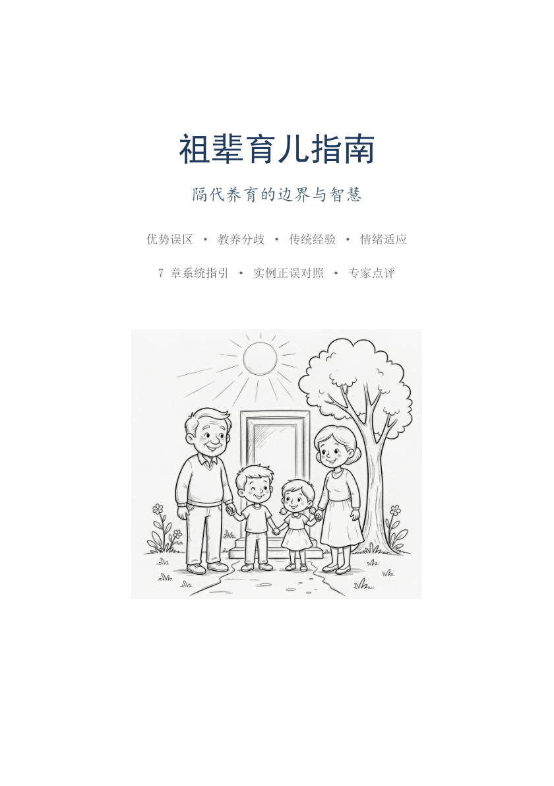
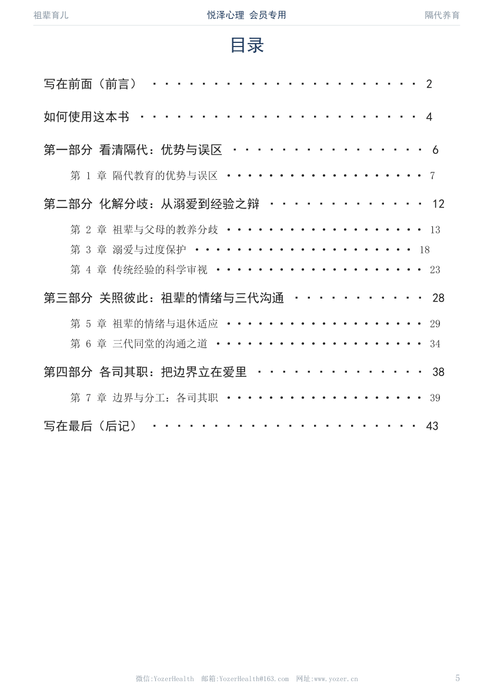
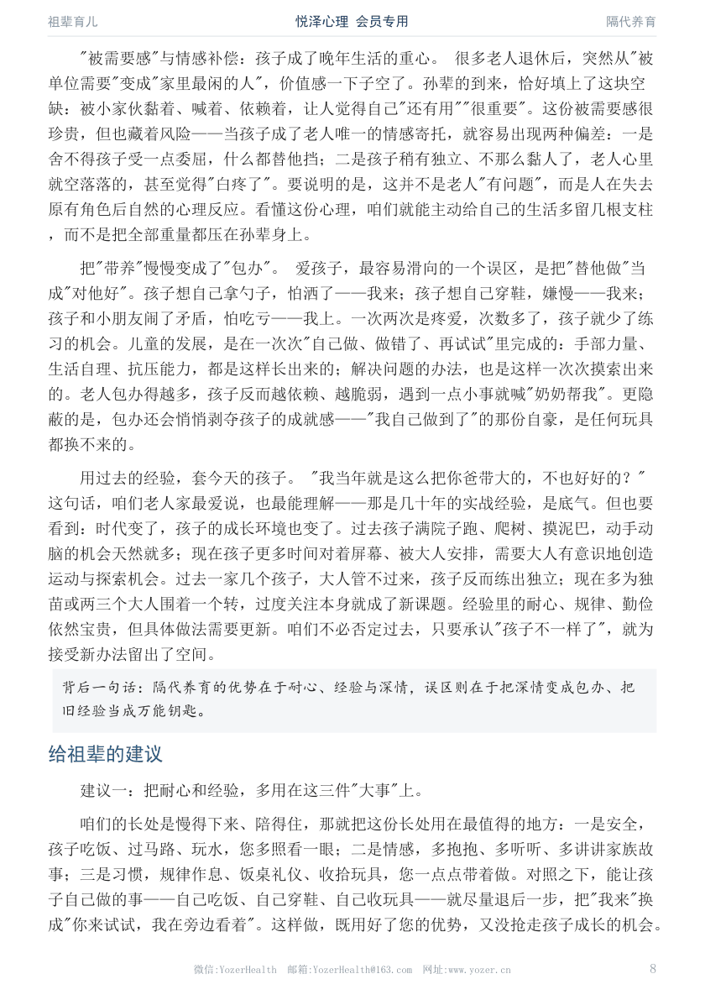
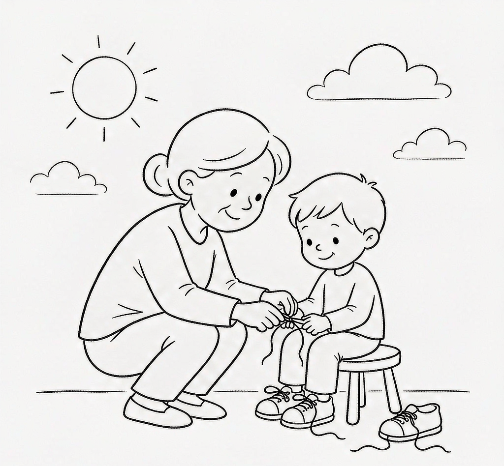

01
看清隔代
1 章隔代教育的优势与误区——先看见祖辈带娃的独特价值。
——隔代养育的边界与智慧
"我们当年一个人带三个孩子，不也带大了？"这本小书先肯定祖辈的付出，再谈方法的更新——从优势与误区、两代教养分歧，到溺爱、传统经验的科学审视，再到祖辈的情绪与三代沟通，最后落到边界与分工：各司其职，把爱立在清楚的角色里。

封面与内页样张来自电子书原稿
翻开这本书之前，先听听作者想说什么
"我们当年一个人带三个孩子，不也带大了？"
"现在的孩子怎么这么娇气，哭两声就哄着。"
"我吃的盐比你吃的米还多，你还来教我怎么带孩子？"
这些话，很多祖辈都说过，也很多父母都听过。说的人理直气壮，听的人一肚子委屈。一边是辛苦付出、自认经验丰富的老人，一边是学了新观念、想把孩子带得更好的年轻父母——两代人明明都爱同一个孩子，却常常因为"怎么带"闹得不愉快。
隔代育儿，是中国家庭再普遍不过的现实。有的家庭是老人全天候帮忙，有的是工作日接送、周末父母接手，也有的是老人从老家赶来，人生地不熟地重新开始。无论哪种，背后都有一份沉甸甸的爱与付出。这本书首先要说的，就是这句话：祖辈愿意帮忙带孩子，不是义务，是情分；这份付出，值得被看见、被感谢、被尊重。
但光有爱和辛苦，还不够。时代变了，孩子成长的环境变了，育儿的知识也在不断更新。过去管用的经验，今天未必都合适；过去被视为"讲究"的做法，现在可能被证明有风险。这不是谁的错——每一代人都是在自己的条件下，尽力做到最好。本书想做的，不是评判"谁对谁错"，而是帮两代人找到一种更舒服的相处方式：既守住科学育儿的底线，又不伤了家人之间的情分。
这本书会陪您聊这些实实在在的事：
第一，看清隔代养育的价值，也看清常见的误区。您带来的耐心、经验、家族的味道，是孩子一生珍贵的礼物；但"把孩子带大"和"把孩子带好"之间，还有一些需要注意的地方。
第二，把分歧摆在桌面上，而不是藏在争吵里。为什么同样一件事，你觉得该管，子女觉得不该管？分歧背后，往往不是"谁不听谁"，而是角色、观念与关心的方式不同。
第三，也请您照顾好自己。带孩子不只是付出，也牵动着退休后的失落、被需要的渴望、价值感的重新寻找。您的情绪和状态，同样值得被认真对待——照顾好自己，才有力气去爱孩子。
第四，把边界与分工说清楚。谁主要负责什么，哪些事可以商量，哪些事必须一致——把这些讲明白，家里的摩擦会少很多，孩子也能在一个稳定、清楚的环境里长大。
书中每一章，都有生活化的场景、可操作的方法、正误对照的例子和一张速查表，方便您随时翻看、直接用上。语言尽量口语化，因为这本书是写给您看的，不是写给您供着的。
愿每一位付出的祖辈，都被温柔以待；愿每一个孩子，都在两代人的爱里，稳稳地长大。
按“看清隔代—化解分歧—关照彼此—各司其职”四部分编排，尊重祖辈，也着眼全家
隔代教育的优势与误区——先看见祖辈带娃的独特价值。
两代教养分歧、溺爱与过度保护、传统经验的科学审视——先肯定，再说明，给替代。
祖辈的情绪与退休适应、三代同堂的沟通之道——带娃之外，也要照顾好自己。
边界与分工：生活照料祖辈可主导，规则与学习父母主责——把边界立在爱里。
统一的章节结构，语气尊重、口语化，方法看得懂、用得上
从带娃的日常场景切入，说的就是您家的事
讲清两代人想法不同的根源，不评判谁对谁错
每条配实例情景，有错误示范与正确示范
点破常见误区，避免好心办坏事
从专业角度收束，讲清原理与边界
7 章 · 附真实页码 · 点击上方按钮可快速跳转试读
以下为第 1 章完整节选，体验尊重祖辈、先肯定后建议的写法
清晨六点半，厨房的灯就亮了。奶奶一边熬粥，一边惦记着孙子上幼儿园要穿的那件厚外套："今天降温，得多穿一件，冻着了可怎么办。"七点半，孩子坐在小凳子上，奶奶端着碗跟在后面，一勺一勺地喂："来，再吃一口，最后一口。"孩子含着饭含糊地说："奶奶，我自己能吃。"奶奶笑着摆手："你还小，喂饱了长得快。"送完幼儿园回来，奶奶又把孩子换下的衣服洗了、玩具收了，忙到上午十点才坐下来歇口气。晚上父母下班，妈妈想让孩子自己收拾书包，奶奶顺手就给整理好了："我闲着也是闲着，你上班累，这些事我来。"妈妈张了张嘴，话到嘴边又咽了回去。
这样的场景，在无数个中国家庭里天天上演。您若也在其中，请先别自责：您做的这一切，出发点都是爱，而且这份爱里藏着实实在在的价值。咱们要做的，不是否定这份付出，而是让它用得更到位。
经验与耐心，是隔代养育天然的优势。爷爷奶奶、外公外婆带孩子，有几样别人替不了的长处。一是时间相对充裕，愿意慢下来：孩子系鞋带系了三分钟，父母急着出门，奶奶却蹲在那儿等着，这份耐心正是幼儿成长需要的。二是经验足，孩子发烧、闹肚子、换季咳嗽，老人心里有底，不至于手忙脚乱。三是情感补偿——年轻时忙工作，对儿女总有亏欠，如今把这份爱补在孙辈身上，格外尽心。四是传递家族情感与文化：方言、老游戏、过节的规矩、祖辈的故事，都是孩子身份认同的根基。这些，都是隔代养育送给孩子最珍贵的礼物。承认并珍惜这些优势，咱们才谈得上方法——方法不是要您改掉爱，而是让爱更有效。
"被需要感"与情感补偿：孩子成了晚年生活的重心。很多老人退休后，突然从"被单位需要"变成"家里最闲的人"，价值感一下子空了。孙辈的到来，恰好填上了这块空缺：被小家伙黏着、喊着、依赖着，让人觉得自己"还有用""很重要"。这份被需要感很珍贵，但也藏着风险——当孩子成了老人唯一的情感寄托，就容易出现两种偏差：一是舍不得孩子受一点委屈，什么都替他挡；二是孩子稍有独立、不那么黏人了，老人心里就空落落的，甚至觉得"白疼了"。要说明的是，这并不是老人"有问题"，而是人在失去原有角色后自然的心理反应。看懂这份心理，咱们就能主动给自己的生活多留几根支柱，而不是把全部重量都压在孙辈身上。
把"带养"慢慢变成了"包办"。爱孩子，最容易滑向的一个误区，是把"替他做"当成"对他好"。孩子想自己拿勺子，怕洒了——我来；孩子想自己穿鞋，嫌慢——我来；孩子和小朋友闹了矛盾，怕吃亏——我上。一次两次是疼爱，次数多了，孩子就少了练习的机会。儿童的发展，是在一次次"自己做、做错了、再试试"里完成的：手部力量、生活自理、抗压能力，都是这样长出来的；解决问题的办法，也是这样一次次摸索出来的。老人包办得越多，孩子反而越依赖、越脆弱，遇到一点小事就喊"奶奶帮我"。更隐蔽的是，包办还会悄悄剥夺孩子的成就感——"我自己做到了"的那份自豪，是任何玩具都换不来的。
用过去的经验，套今天的孩子。"我当年就是这么把你爸带大的，不也好好的？"这句话，咱们老人家最爱说，也最能理解——那是几十年的实战经验，是底气。但也要看到：时代变了，孩子的成长环境也变了。过去孩子满院子跑、爬树、摸泥巴，动手动脑的机会天然就多；现在孩子更多时间对着屏幕、被大人安排，需要大人有意识地创造运动与探索机会。过去一家几个孩子，大人管不过来，孩子反而练出独立；现在多为独苗或两三个大人围着一个转，过度关注本身就成了新课题。经验里的耐心、规律、勤俭依然宝贵，但具体做法需要更新。咱们不必否定过去，只要承认"孩子不一样了"，就为接受新办法留出了空间。
建议一：把耐心和经验，多用在这三件"大事"上。
咱们的长处是慢得下来、陪得住，那就把这份长处用在最值得的地方：一是安全，孩子吃饭、过马路、玩水，您多照看一眼；二是情感，多抱抱、多听听、多讲讲家族故事；三是习惯，规律作息、饭桌礼仪、收拾玩具，您一点点带着做。对照之下，能让孩子自己做的事——自己吃饭、自己穿鞋、自己收玩具——就尽量退后一步，把"我来"换成"你来试试，我在旁边看着"。这样做，既用好了您的优势，又没抢走孩子成长的机会。记住：真正的好，不是替他铺平路，而是站在路口，看着他自己走。
建议二：把"我当年怎么带"，换成"现在孩子需要什么"。
经验是财富，但别让它变成挡住新知识的墙。遇到和儿女意见不同的做法，先别急着用"我还不是这么带你"压回去，可以先问一句："现在是这么做的？有什么讲究？"比如把尿、捂汗、嚼碎喂食这些老办法，现在有了更科学的替代方式，咱们了解一下，心里就更有数。学习不必求全，从一本靠谱的育儿书、社区卫生服务中心的讲座、医生的一句话开始都行。咱们要守住的，是经验里那些不过时的东西——耐心、规律、勤俭、家族情感；要更新的，是那些被时代淘汰的具体做法。承认"孩子不一样了"，不是否定您过去的成功，而是让这份经验继续管用。
建议三：生活照料您多担待，规则大事请父母来定。
隔代带养最舒服的分工，是"生活您多管、规矩一起守"。吃喝拉撒、接送看护、日常陪伴，您经验足、时间多，这些您多担待；而打人、撒谎、作息底线这类规则，尽量和儿女商量着来，最好由父母主导。尤其重要的一条：别当着孩子的面拆父母的台。父母说"今天不能吃糖"，您转手塞一块，孩子马上学会了"找奶奶就行"。当场有分歧，先按住，关起门再和儿女聊。您守住这条，父母在孩子心里的权威就立得住，孩子也不会钻空子。这不是谁听谁的，而是全家把劲儿往一处使。
建议四：把生活过成自己的，别让孩子成为唯一的寄托。
疼孙子是福气，但也得给自己的生活留一块地。人一旦把全部心思都放在孩子身上，孩子稍微长大、不那么黏人了，心里就容易空，甚至无意识地用"包办""护短"把孩子留在身边。建议您有意识地找回自己的节奏：晨练、买菜、老姐妹喝茶、社区活动、种花养鸟，哪怕每天半小时，也是在给自己的价值感"充电"。孩子需要的是一个快乐、松弛的奶奶，而不是一个时刻围着他转、眼里只有他的奶奶。您过得好，本身就是给孩子最好的示范——他会看到，人老了也可以有自己的精彩。这份从容，比任何包办都更让孩子安心。
把"替他做"当成"对他好"。系鞋带、收书包这类小事，包办多了孩子就懒得动手，自理能力和自信一起被"包"没了。
拿"我当年就是这么带的"压人。经验是底气，但时代变了，具体做法该更新时就更新，别让老经验挡了新办法。
当着孩子面拆父母的台。父母刚立的规矩，您一句话就推翻，孩子立刻学会"找奶奶就行"，规矩就散了。
用零食和零花钱换孩子的高兴。一时讨得欢心，长期却让孩子学会用哭闹换取满足，也不利于养成良好的饮食习惯。
把孩子当成唯一的情感寄托。全部心思都压在孙辈身上，孩子一长大疏远，老人心里就空，也容易不自觉地"绑"住孩子。
该管的松、该坚持的反而软。吃喝穿戴样样替孩子做主，打人、撒谎、作息这些底线却"算了"，轻重就颠倒了。
隔代教育的本质，是一场关于"爱的方式"的功课。您的爱不缺，缺的只是把爱用对地方的分寸。咱们这一代人带大过儿女，又把孙辈带大，这份付出值得全家郑重地道一声谢谢；真正需要调整的，从来不是"爱得够不够"，而是"爱得有没有边界"。好的隔代养育，是您用耐心守护安全、用经验安抚病痛、用故事传递家风，同时把"自己来"的机会留给孩子的成长，把"立规矩"的主导权交给父母。做到这些，您就不是"抢着带孩子的老人"，而是孩子一生中最稳的靠山。
也要体谅：若您退休后总觉得心里空、忍不住想把孩子攥紧，这往往与角色转换带来的失落有关，不必自责。可以试着把注意力分一些到自己的兴趣、老朋友和运动上；如果这种空落、烦躁或睡不好持续存在，影响到日常生活，建议主动和儿女说说，必要时寻求专业帮助。先照顾好自己的心，才有余力把爱给得从容又有分寸。
# 第二部分 化解分歧：从溺爱到经验之辩
—— 以上为节选，完整内容见电子书 ——
真实排版预览 · A5 竖版 · 黑白简笔画插图



图片为文档内嵌样张，仅作版式展示
| 项目 | 说明 |
|---|---|
| 书名 | 祖辈育儿指南 |
| 副标题 | 隔代养育的边界与智慧 |
| 读者对象 | 祖辈与三代同堂家庭 |
| 篇幅 | 7 章 · 约 2.9 万字 · 43 页 |
| 版本 | A5 版（148×210mm） |
| 格式 | PDF 电子书 |
| 插图 | 8 张黑白简笔画题图 |
| 结构 | 四部分 · 每章五步 · 实例正误对照 |